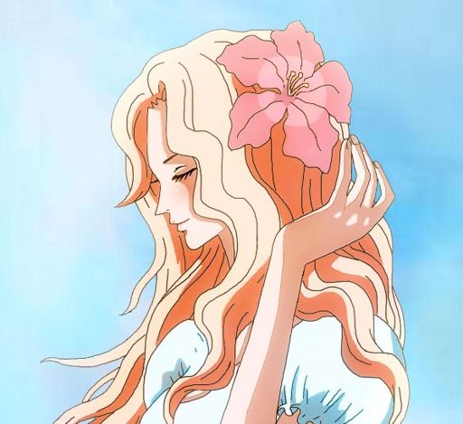

Gol D. Roger
Was once the king of the pirates. He led his crew to be the first to ever reach Laugh Tale and discover the One Piece while also learning the truth about the void century. He once teamed up with the Navy Vice Admiral Garp to take down the whole crew of the legenday Rocks Pirates.

Portgas D. Ace
The second division commander of the White-beard Pirates. He grew up together and is considered a brother to Emperor Monkey D. Luffy. He is a very fond of donuts.

Portgas D. Rouge
A very strong willed woman. Rouge held her pregnancy for twenty months to hide Ace's connection with Roger. All the while lamenting for the execution of the Pirate King. She sadly passed giving birth as she pushed her body through its limits.